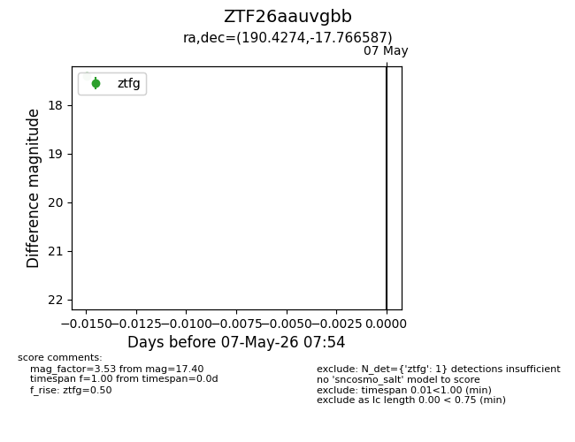
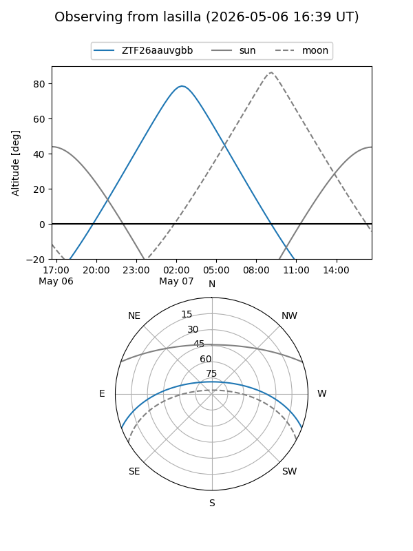
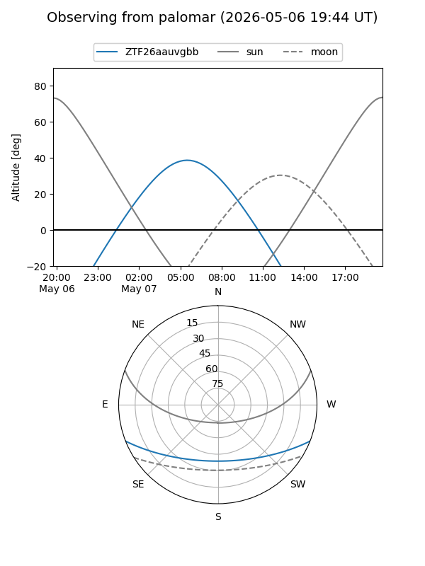

ZTF26aauvgbb
Target ZTF26aauvgbb at 2026-05-07 07:56
Aliases and brokers:
FINK: link
Lasair: link
ALeRCE: link
alt names
ZTF26aauvgbb (ztf,fink_ztf)
Coordinates:
equatorial (ra, dec) = 190.4274,-17.76659
equatorial (HMS+DMS) = 12:41:42.59,-17:45:59.71
galactic (l, b) = (299.6533,+45.04322)
Flags:
Photometry:
last ztfg=17.40
1 ztfg detections
Lightcurve

Visibility


Additional plots